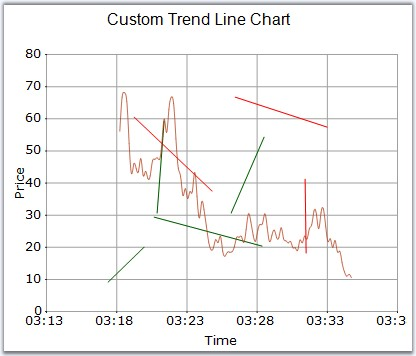

TrendLines are used to draw lines in the ChartArea. They can be added to the chart using the TrendLineAdder class.
TrendLines can also be drawn using the Mouse Events. In this case, you will have to make use of the Utility class to listen to mouse events and convert them into trendlines. You can draw any number of trendlines, and can set different colors to differentiate them.
|
[C#]
// Creating Custom Points ChartPoint ptStart = this.chart.ChartArea.GetValueByPoint(start); ChartPoint ptEnd = this.chart.ChartArea.GetValueByPoint(end); ChartSeries tseries = this.chart.Model.NewSeries("TrendLine", ChartSeriesType.Line); tseries.Points.Add(ptStart); tseries.Points.Add(ptEnd); this.chart.Series.Add(tseries); tseries.LegendItem.Visible = false;
// Specify the color for the lines. tseries.Style.Interior = new Syncfusion.Drawing.BrushInfo(ptStart.YValues[0] < ptEnd.YValues[0] ? Color.DarkGreen : Color.Red); |
|
[VB.NET]
' Creating Custom Points Dim tlineAdder As TrendLineAdder Dim ptStart As ChartPoint = Me.chart.ChartArea.GetValueByPoint(start) Dim ptEnd As ChartPoint = Me.chart.ChartArea.GetValueByPoint(end_Renamed) Dim tseries As ChartSeries = Me.chart.Model.NewSeries("TrendLine", ChartSeriesType.Line) tseries.Points.Add(ptStart) tseries.Points.Add(ptEnd) Me.chart.Series.Add(tseries) tseries.LegendItem.Visible = False
' Specify the color for the lines. If ptStart.YValues(0) < ptEnd.YValues(0) Then tseries.Style.Interior = New Syncfusion.Drawing.BrushInfo(Color.DarkGreen) Else tseries.Style.Interior = New Syncfusion.Drawing.BrushInfo(Color.Red) End If |

Figure 369: Custom TrendLines added to Chart